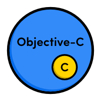
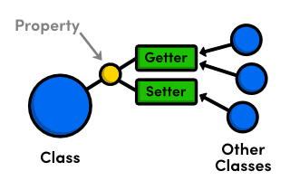

Objective - C Basics
Created by Chen Xi
Introduction
Objective-C is a strict superset of C, which means that it’s possible to seamlessly combine both languages in the same source file.
Basic Syntax
Comments
// This is an inline comment
/* This is a block comment.
It can span multiple lines. */
Variables
// main.m
#import <Foundation/Foundation.h>
int main(int argc, const char * argv[]) {
@autoreleasepool {
double odometer = 9200.8;
int odometerAsInteger = (int)odometer;
NSLog(@"You've driven %.1f miles", odometer); // 9200.8
NSLog(@"You've driven %d miles", odometerAsInteger); // 9200
}
return 0;
}
Constants
double const pi = 3.14159;
pi = 42001.0; // Compiler error
Operators
- Arithmetic Operators
- Relational Operators
- Logical Operators
- Bitwise Operators
- Assignment Operators
- Misc Operators
Data Types
C Primitives
- void
- Integer Types
- Floating-Point Types
id
The id type is the generic type for all Objective-C objects. Like a void pointer, it can store a reference to any type of object.
id mysteryObject = @"An NSString object";
NSLog(@"%@", [mysteryObject description]);
mysteryObject = @{@"model": @"Ford", @"year": @1967};
NSLog(@"%@", [mysteryObject description]);
Class
Objective-C classes are represented as objects themselves, using a special data type called Class. This lets you, for example, dynamically check an object’s type at runtime.
Class targetClass = [NSString class];
id mysteryObject = @"An NSString object";
if ([mysteryObject isKindOfClass:targetClass]) {
NSLog(@"Yup! That's an instance of the target class");
}
SEL
The SEL data type is used to store selectors, which are Objective-C’s internal representation of a method name.
SEL someMethod = @selector(sayHello);
Defined in Foundation Framework
- NSSet
- NSNumber
- NSArray
- NSDecimalNumber
- NSDictionary
- NSString
- Dates
Creating Objects
standard alloc/init pattern
NSNumber *twentySeven = [[NSNumber alloc] initWithInt:27];
factory methods provided by Foundation Framework
NSNumber *twentySeven = [NSNumber numberWithInt:27];
Comparing Objects
- Pointer comparison uses the == operator to see if two pointers refer to the same memory address (i.e., the same object).
- Value comparison uses methods like isEqualToNumber: to see if two objects represent the same value. It is possible for different objects to compare equal with this kind of comparison
Flow Control & Loop
Flow Control
int modelYear = 1990;
if (modelYear < 1967) {
NSLog(@"That car is an antique!!!");
} else if (modelYear <= 1991) {
NSLog(@"That car is a classic!");
} else if (modelYear == 2013) {
NSLog(@"That's a brand new car!");
} else {
NSLog(@"There's nothing special about that car.");
}
// Switch statements (only work with integral types)
switch (modelYear) {
case 1987:
NSLog(@"Your car is from 1987.");
break;
case 1988:
NSLog(@"Your car is from 1988.");
break;
case 1989:
case 1990:
NSLog(@"Your car is from 1989 or 1990.");
break;
default:
NSLog(@"I have no idea when your car was made.");
break;
}
Loop
// For-in loops ("Fast-enumeration," specific to Objective-C)
NSArray *models = @[@"Ford", @"Honda", @"Nissan", @"Porsche"];
for (id model in models) {
NSLog(@"%@", model);
}
Class
Objective-C is similar to C++ in that it abstracts a class’s interface from its implementation. An interface declares the public properties and methods of a class, and the corresponding implementation defines the code that actually makes these properties and methods work.

Interfaces
// Car.h
#import <Foundation/Foundation.h>
@interface Car : NSObject {
// Protected instance variables
}
@property (copy) NSString *model;
- (void)drive;
@end
Implementations
// Car.m
#import "Car.h"
@implementation Car {
// Private instance variables
double _odometer;
}
@synthesize model = _model; // Optional for Xcode 4.4+
- (void)drive {
NSLog(@"Driving a %@. Vrooooom!", self.model);
}
@end
Instantiation and Usage
// main.m
#import <Foundation/Foundation.h>
#import "Car.h"
int main(int argc, const char * argv[]) {
@autoreleasepool {
Car *toyota = [[Car alloc] init];
[toyota setModel:@"Toyota Corolla"];
NSLog(@"Created a %@", [toyota model]);
toyota.model = @"Toyota Camry";
NSLog(@"Changed the car to a %@", toyota.model);
[toyota drive];
}
return 0;
}
Class Methods and Variables
// Car.h
+ (void)setDefaultModel:(NSString *)aModel;
// Car.m
#import "Car.h"
static NSString *_defaultModel;
@implementation Car {
...
+ (void)setDefaultModel:(NSString *)aModel {
_defaultModel = [aModel copy];
}
@end
// main.m
[Car setDefaultModel:@"Nissan Versa"];
Custom Initialization Methods
// Car.h
- (id)initWithModel:(NSString *)aModel;
// Car.m
- (id)initWithModel:(NSString *)aModel {
self = [super init];
if (self) {
// Any custom setup work goes here
_model = [aModel copy];
_odometer = 0;
}
return self;
}
- (id)init {
// Forward to the "designated" initialization method
return [self initWithModel:_defaultModel];
}
Class-Level Initialization
// Car.m
+ (void)initialize {
if (self == [Car class]) {
// Makes sure this isn't executed more than once
_defaultModel = @"Nissan Versa";
}
}
// main.m
#import <Foundation/Foundation.h>
#import "Car.h"
int main(int argc, const char * argv[]) {
@autoreleasepool {
// Instantiating objects
Car *nissan = [[Car alloc] init];
NSLog(@"Created a %@", [nissan model]);
Car *chevy = [[Car alloc] initWithModel:@"Chevy Corvette"];
NSLog(@"Created a %@, too.", chevy.model);
}
return 0;
}
Property
@property
// Car.h
#import <Foundation/Foundation.h>
@interface Car : NSObject
@property BOOL running;
@end
// Car.m
#import "Car.h"
@implementation Car
@synthesize running = _running; // Optional for Xcode 4.4+
@end
- (BOOL)running {
return _running;
}
- (void)setRunning:(BOOL)newValue {
_running = newValue;
}
// main.m
#import <Foundation/Foundation.h>
#import "Car.h"
int main(int argc, const char * argv[]) {
@autoreleasepool {
Car *honda = [[Car alloc] init];
honda.running = YES; // [honda setRunning:YES]
NSLog(@"%d", honda.running); // [honda running]
}
return 0;
}
honda.running code actually calls setRunning: when you assign a value to it and the running method when you read a value from it.
getter= and setter= Attributes
If you don’t like @property’s default naming conventions, you can change the getter/setter method names with the getter= and setter= attributes.
@property (getter=isRunning) BOOL running;
Car *honda = [[Car alloc] init];
honda.running = YES; // [honda setRunning:YES]
NSLog(@"%d", honda.running); // [honda isRunning]
NSLog(@"%d", [honda running]); // Error: method no longer exists
readonly Attribute
The readonly attribute is an easy way to make a property read-only. It omits the setter method and prevents assignment via dot-notation, but the getter is unaffected.
#import <Foundation/Foundation.h>
@interface Car : NSObject
@property (getter=isRunning, readonly) BOOL running;
- (void)startEngine;
- (void)stopEngine;
@end
// Car.m
#import "Car.h"
@implementation Car
- (void)startEngine {
_running = YES;
}
- (void)stopEngine {
_running = NO;
}
@end
Car *honda = [[Car alloc] init];
[honda startEngine];
NSLog(@"Running: %d", honda.running);
honda.running = NO; // Error: read-only property
nonatomic Attribute
@property (nonatomic) NSString *model;
Method
Naming Conventions
- Don’t abbreviate anything.
- Explicitly state parameter names in the method itself.
- Explicitly describe the return value of the method.
Examples
// Accessors
- (BOOL)isRunning;
- (void)setRunning:(BOOL)running;
// Action methods
- (void)driveForDistance:(double)theDistance;
- (void)driveFromOrigin:(id)theOrigin toDestination:(id)theDestination;
// Constructor methods
- (id)initWithModel:(NSString *)aModel;
- (id)initWithModel:(NSString *)aModel mileage:(double)theMileage;
// Comparison methods
- (BOOL)isEqualToCar:(Car *)anotherCar;
Calling Methods
[porsche initWithModel:@"Porsche"];
[porsche initWithModel:@"Porsche" mileage:42000.0];
Nested Method Calls
[[Car alloc] init];
Protected and Private Methods?
Selectors
Selectors are Objective-C’s internal representation of a method name. They let you treat a method as an independent entity, enabling you to separate an action from the object that needs to perform it.
// main.m
#import <Foundation/Foundation.h>
#import "Car.h"
int main(int argc, const char * argv[]) {
@autoreleasepool {
Car *porsche = [[Car alloc] init];
porsche.model = @"Porsche 911 Carrera";
SEL stepOne = NSSelectorFromString(@"startEngine");
SEL stepTwo = @selector(driveForDistance:);
SEL stepThree = @selector(turnByAngle:quickly:);
// This is the same as:
// [porsche startEngine];
[porsche performSelector:stepOne];
// This is the same as:
// [porsche driveForDistance:[NSNumber numberWithDouble:5.7]];
[porsche performSelector:stepTwo
withObject:[NSNumber numberWithDouble:5.7]];
if ([porsche respondsToSelector:stepThree]) {
// This is the same as:
// [porsche turnByAngle:[NSNumber numberWithDouble:90.0]
// quickly:[NSNumber numberWithBool:YES]];
[porsche performSelector:stepThree
withObject:[NSNumber numberWithDouble:90.0]
withObject:[NSNumber numberWithBool:YES]];
}
NSLog(@"Step one: %@", NSStringFromSelector(stepOne));
}
return 0;
}